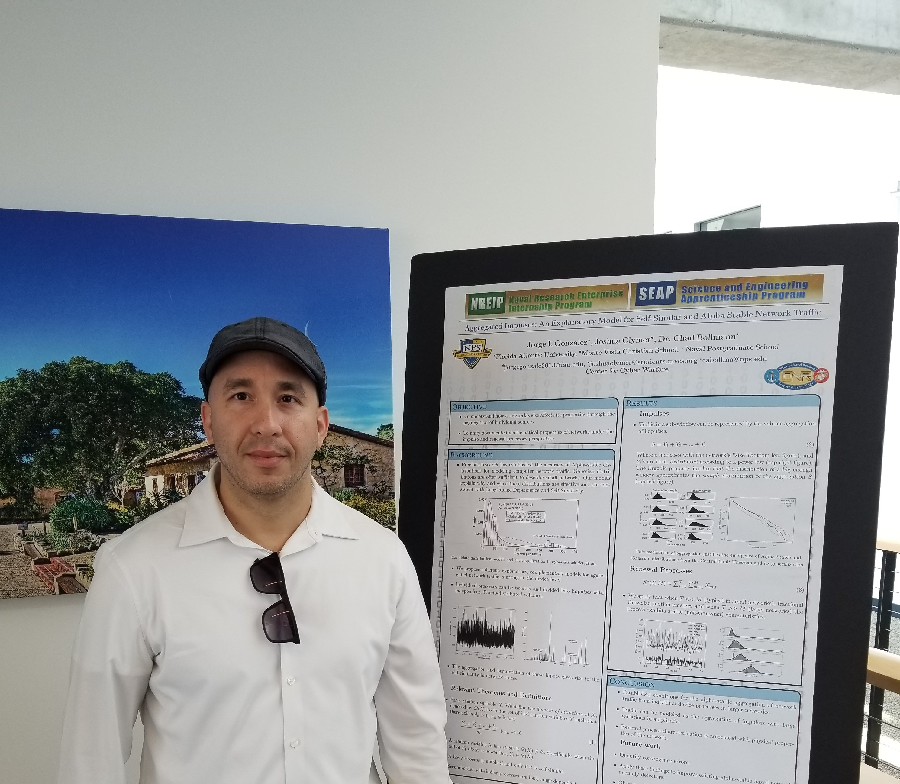

Curriculum Vitae
Download full CV

Contact Information
Email: jorgegonzale2013@fau.edu
Research Interests
Dynamical Systems, invariant manifolds, Bifurcation Theory, Perturbation Theory, ODE, PDE,
computer-assisted proofs, Computational Topology, numerical methods, optimization, mathematical modeling,
Celestial Mechanics, Fluid Dynamics, Mathematical Biology, Computational Neuroscience, cognitive modeling,
Machine Learning, stochastic processes, network traffic, Percolation Theory, Ramsey Theory.
Education and Professional Credentials
Awards and Fellowships
- NSF grant MSPRF DMS-2001758, Georgia Institute of Technology, Fall 2020
- Stuyvesant Legacy of Excellence in STEM Scholarship, Fall 2019
- Stuyvesant Legacy of Excellence in STEM Scholarship, Fall 2018
- Gus and Sharon Pearthree Math Graduate Scholar Award, Fall 2017
- FAU Graduate Grant, Fall 2016
- Delores Auzenne Fellowship, Fall 2016
- Provosts Fellowship, Fall 2013
- FAU Graduate Grant, Fall 2013